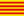

Credits
From Aegisub Manual
Todo: Make sure that nobody is missing from the list - if you are or can think of someone, please let us know.
Contents |
[edit] Programming
- Main Programmers:
- Rodrigo Braz Monteiro (ArchMage ZeratuL) - Lead developer, video system, audio system, subtitles I/O, tools, PRS library
 Niels Martin Hansen (jfs) - Automation, Lua automation, audio system, tools
Niels Martin Hansen (jfs) - Automation, Lua automation, audio system, tools
- Staff Contributors:
- Karl Blomster (TheFluff) - General code, FFmpegSource video provider, FFmpeg-related patches, Perl hacking
- Fredrik Mellbin (Myrsloik) - FFmpegSource and Avisynth-related code
- Amar Takhar (verm) - New unix build system
- David Lamparter (equinox) - Unix port, FFMPEG-related programming, asa
- Alysson Souza e Silva (demi_alucard) - General code
- Other contributors:
 Dan Donovan (Dansolo) - Miscellaneous tools
Dan Donovan (Dansolo) - Miscellaneous tools
 Simone Cociancich (shb) - Perl automation
Simone Cociancich (shb) - Perl automation
- Patryk Pomykalski (Pomyk) - Ruby automation, Miscellaneous patching
 ai-chan - ASSDraw3
ai-chan - ASSDraw3
 Evgeniy Stepanov (Azzy) - Some Linux patches, libass
Evgeniy Stepanov (Azzy) - Some Linux patches, libass
- Mike Matsnev (Haali) - Some DirectShow code and Matroska Parser library
- 2points - Linux patches
- p-static - Linux patches
- David Conrad (Yuvi) - Mac patches
- Daniel Moscoviter (Mosc) - General patches
- Plorkyeran - Various patches
- Harukalover - Usability, various patches
[edit] Installer
- 2.x:
- Niels Martin Hansen (jfs)
- Fredrik Mellbin (Myrsloik)
- Rodrigo Braz Monteiro (ArchMage ZeratuL)
- Previous:
- movax
[edit] Manual
- 2.x:
- Karl Blomster (TheFluff)
- Niels Martin Hansen (jfs)
- Rodrigo Braz Monteiro (ArchMage ZeratuL)
- Previous:
- Motoko-chan
- Kobi
- movax
- Jcubed
[edit] Hosting
- Current:

 DeathWolf: SVN repository for versions 2.1.2+
DeathWolf: SVN repository for versions 2.1.2+
- Sigurd Tao Lyngse (Bot1): Forums and Main Wiki
- Niels Martin Hansen (jfs): Bug Tracker
- Marcello Bastéa-Forte: Documentation Wiki
- Rodrigo Braz Monteiro (ArchMage ZeratuL): Domain administration
- Previous:
- David Lamparter (equinox): SVN repository for versions 2.00 - 2.1.2
- BerliOS: SVN repository for version 1.10
- Mentar: SVN repository up to version 1.09
- Bot1: Bug Tracker
[edit] Localization files
Todo: This is outdated
- 2.00 translations:
- ArchMage ZeratuL: Brazilian Portuguese
-  Ereza: Catalan
- Yuri: Hungarian
- Hiroshi: Japanese
- Jeroi: Finnish
- 1.11 translations:
- Karasu: Traditional Chinese
- 1.10 translations:
- TechNiko: French
- Crysral: French
- thrash-sensei: Russian
- equinox: German
 Nesukun: Spanish
Nesukun: Spanish
- EmBolo: Italian
- Mazinga: Italian
 oblisk: Korean
oblisk: Korean
- mulrich: Danish
[edit] Additional thanks
 Combined Community Codec Pack staff
Combined Community Codec Pack staff
- Gabest for VSFilter
- squid_80 for the x64 builds of Avisynth and CSRI-enabled VSFilter
- Firebird for some of the toolbar icons
- Kayle for help with Win32 VfW interface
- ender for yawning a lot
- Alpha testers: Maya, nich, TheFluff, Vincent, zegnat
[edit] About
Aegisub 2 was developed using Microsoft Visual Studio 2005 and wxWidgets 2.8. The Automation module also uses the Lua, Perl and Ruby programming languages. The Regular Expressions code used in this program was written by Henry Spencer and included in wxWidgets. Some builds of Aegisub also uses the PortAudio, OpenAL, PulseAudio, libpng, zlib, Hunspell, universalchardet, CSRI, asa, libass, Freetype 2 and ffmpeg libraries.
Category: Pages with Todo items